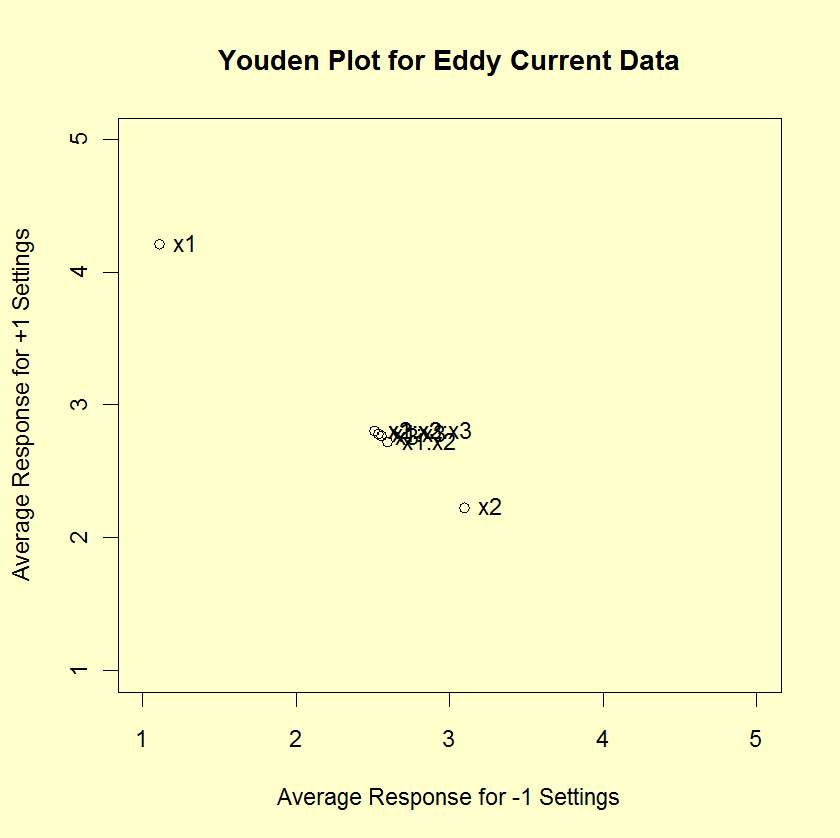

|
1.
Exploratory Data Analysis
1.3. EDA Techniques 1.3.3. Graphical Techniques: Alphabetic 1.3.3.31. Youden Plot
|
|||
| DOE Youden Plot: Introduction |
The DOE (Design of Experiments) Youden plot is a specialized
Youden plot used in the analysis of
full and
fractional
experiment designs. In particular, it is used in conjunction with the
Yates algorithm.
These designs may have a low level, coded as
"-1" or "-", and a high level, coded as "+1" or "+", for each
factor. In addition, there can optionally be one or more
center points. Center points are at the midpoint between
the low and high levels for each factor and are coded as "0".
The Yates agorithm and the the DOE Youden plot only use the "-1" and "+1" points. The Yates agorithm is used to estimate factor effects. The DOE Youden plot can be used to help determine the approriate model to based on the effect estimates from the Yates algorithm. |
||
| Construction of DOE Youden Plot |
The following are the primary steps in the construction
of the DOE Youden plot.
In summary, the DOE Youden plot is a plot of the mean of the response variable for the high level of a factor or interaction term against the mean of the response variable for the low level of that factor or interaction term. For unimportant factors and interaction terms, these mean values should be nearly the same. For important factors and interaction terms, these mean values should be quite different. So the interpretation of the plot is that unimportant factors should be clustered together near the grand mean. Points that stand apart from this cluster identify important factors that should be included in the model. |
||
| Sample DOE Youden Plot |
The following is a DOE Youden plot for the data used in the
Eddy current case
study. The analysis in that case study demonstrated that
X1 and X2 were the most important factors.
 |
||
| Interpretation of the Sample DOE Youden Plot |
From the above DOE Youden plot, we see that factors 1 and 2
stand out from the others. That is, the mean
response values for the low and high levels of factor 1 and
factor 2 are quite different. For factor 3 and the 2 and 3-term
interactions, the mean response values for the low and high
levels are similar.
We would conclude from this plot that factors 1 and 2 are important and should be included in our final model while the remaining factors and interactions should be omitted from the final model. |
||
| Case Study | The Eddy current case study demonstrates the use of the DOE Youden plot in the context of the analysis of a full factorial design. | ||
| Software | DOE Youden plots are not typically available as built-in plots in statistical software programs. However, it should be relatively straightforward to write a macro to generate this plot in most general purpose statistical software programs. | ||